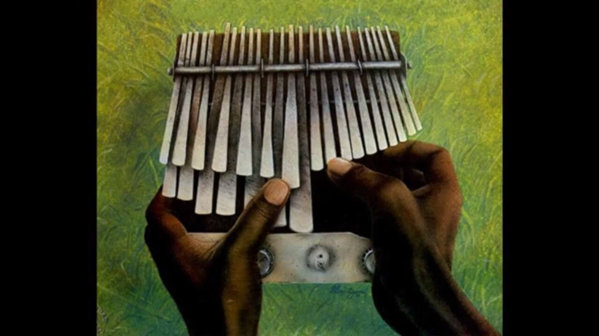
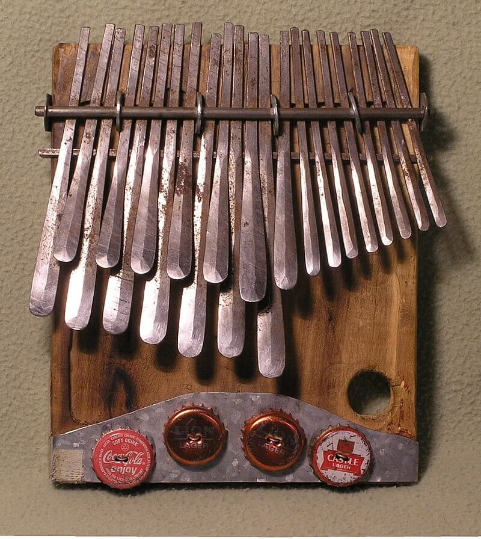

El Kalimba.
La sanza, mambira o kalimba es un instrumento de la familia de la percusión. La kalimba es un instrumento musical del sur de África. Consiste en una caja de resonancia con llaves metálicas en la parte superior para dar las diferentes notas. Varias lengüetas o púas son desplumadas con el pulgar o los dedos, y las vibraciones de la lengüeta son amplificadas por un resonador de caja hueca o una caja de resonancia.
El nombre kalimba es una palabra bantú que significa «poca música» y es similar a la palabra karimba, un tipo de mambira. El nombre kalimba es ahora un nombre genérico y puede describir cualquier piano de pulgar no tradicional, o incluso puede ser utilizado genéricamente para los lameléfonos tradicionales de África (es decir, la mbira, karimba, sansa, etc.).

Origen
Se cree que la kalimba indígena que sirvió de inspiración para el instrumento actual fue inventada en Zimbabwe hace unos 1.000 años, a lo largo de los años ésta era utilizada principalmente para entretenimiento musical de baile, pero también era tocada en ceremonias de posesión del espíritu bira. Hay evidencia arqueológica en Zambia, de tiras de hierro que se asemejan a láminas que han sido datadas indirectamente en el 500-700 A.C. Este origen temprano sugiere que la kalimba puede ser la forma original de lamelas en Zimbabwe.
La versión Hugh Tracey de la kalimba popularizó esta forma de mbira y amplió el atractivo de este instrumento para la audiencia occidental en algún momento de la segunda mitad del siglo XX, esto debido a que su creador quería introducir este fascinante, acompañante y único instrumento africano en el resto del mundo. Esta Kalimba es un nuevo instrumento musical con una historia antigua, el último miembro de la familia africana de instrumentos conocidos por nombres como Mbira, Likembe, Chisanzi, Endongo, Timbrh, Marimbula.
Partes de la Kalimba.
 Hasta hace muy poco tiempo, había muy pocos libros sobre la práctica de la kalimba, y la gente a menudo no comparte el mismo vocabulario cuando se refiere a las diversas partes de ella.
Caja resonante o tabla plana.
Algunos kalimbas africanos tradicionales se hacían sobre cuerpos huecos y resonantes, pero la mayoría estaban montados sobre una tabla plana. Aquellos montados en caja son más fuertes y se puede obtener un gran efecto «wah-wah» cubriendo y destapando los agujeros de sonido. Los kalimbas montadas en placa tienen una «curva de ecualización» más plana, y se pueden amplificar de la manera tradicional; poniéndolas dentro o encima de una calabaza grande, seca y ahuecada para mejorar la resonancia.
Otras estructuras resonantes.
Cuando se pulsa un diente para producir un tono en la kalimba, no se tiene mucho control sutil sobre cómo vibrará el diente. Sin embargo, tienes algún control sobre cómo resonará el cuerpo del kalimba. Si cubre y descubre el agujero de sonido, cambiará las propiedades resonantes de la caja. Hay cámaras resonantes inteligentes en algunos kalimbas que pueden dar variaciones muy interesantes en el tono, así como en la duración de las notas.
Púas.
Se encuentran por debajo del travesaño central, separadas uniformemente en la tabla. Son las responsables del sonido.
Características.
- La kalimba está inspirado en los instrumentos africanos bantúes indígenas y fabricados en la República de Suráfrica.
- El rango del instrumento es de B3 a D6.
- El instrumento consta de 22 a 28 teclas metálicas montadas en una caja de resonancia de madera dura.
- La tabla está hecha de un árbol indígena, el árbol mubvamaropa (Pterocarpus angolensis).
- Originalmente las llaves metálicas se fundían directamente de la roca que contiene mineral de hierro, pero con el tiempo empezaron a hacer de acero reciclado; como resortes, radios de bicicleta o resortes de asiento de coche.
Cómo funciona la Kalimba.
Las diecisiete lengüetas/lamelas de acero son consistentes en anchura y grosor, difiriendo entre sí sólo en su longitud. Se sujetan con una barra metálica de presión que se atornilla a la caja de resonancia. La barra ejerce una presión descendente sobre las láminas contra un respaldo, una pieza de madera horizontal semicircular en la parte superior de la caja de resonancia y un puente, una varilla de metal empotrada en un bloque de madera horizontal que se pega a la caja de resonancia a unas dos pulgadas por debajo de la parte superior del resonador.
La sección vibratoria de una lámina es la que se extiende más allá de la varilla metálica. El extremo de cada lengua que toca está ligeramente doblado hacia abajo. El resonador está construido con seis tablillas de madera de mubvamaropa pegadas entre sí para formar una caja de forma trapezoidal. En el centro de la caja de resonancia se taladra un orificio y en la parte trasera del resonador se taladran dos orificios más pequeños.
Cómo se toca la Kalimba.
El músico sostiene los lados de la caja de resonancia en las palmas de sus manos, dejando sus pulgares libres para flexionar y soltar las lenguas con un movimiento hacia abajo. El pulgar derecho del artista trabaja las nueve láminas del lado derecho, mientras que las ocho lenguas del lado izquierdo son tocadas por el pulgar izquierdo.
El instrumento está afinado aproximadamente a una escala diatónica de igual temperamento. Comenzando desde la lengua más larga en el centro del teclado (de color azul) y alternando los lados a medida que se mueve hacia afuera con el primer movimiento a la izquierda, se produce una escala de sol mayor a partir de su tercer grado de escala. El dedo índice o medio de cada mano puede usarla el músico para abrir y cerrar los agujeros en el tablero y así crear un efecto vibratorio.
{kind=link}